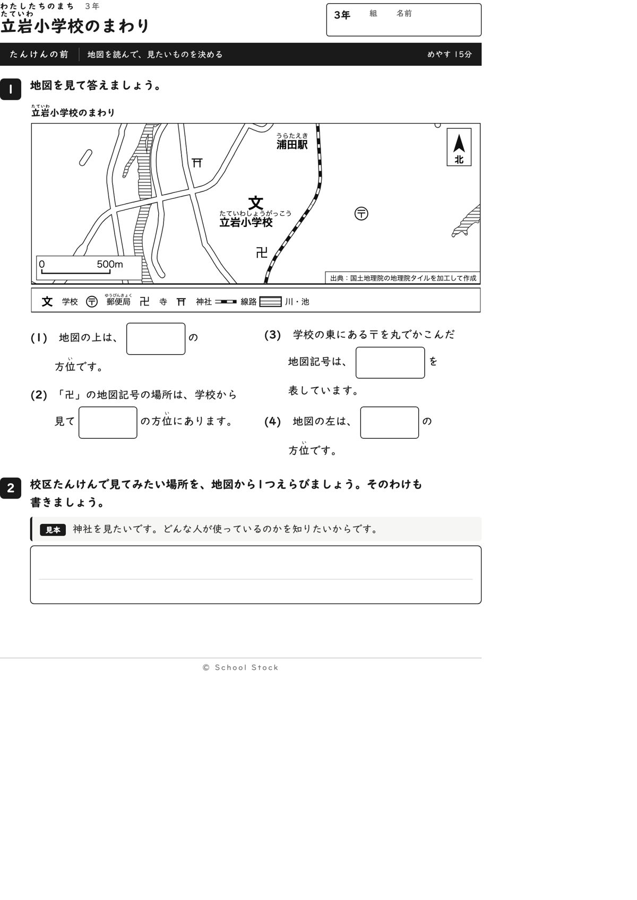
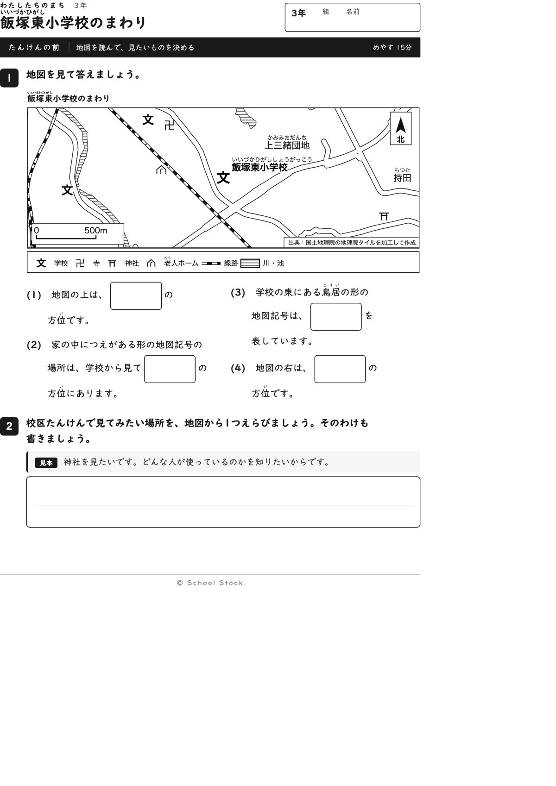
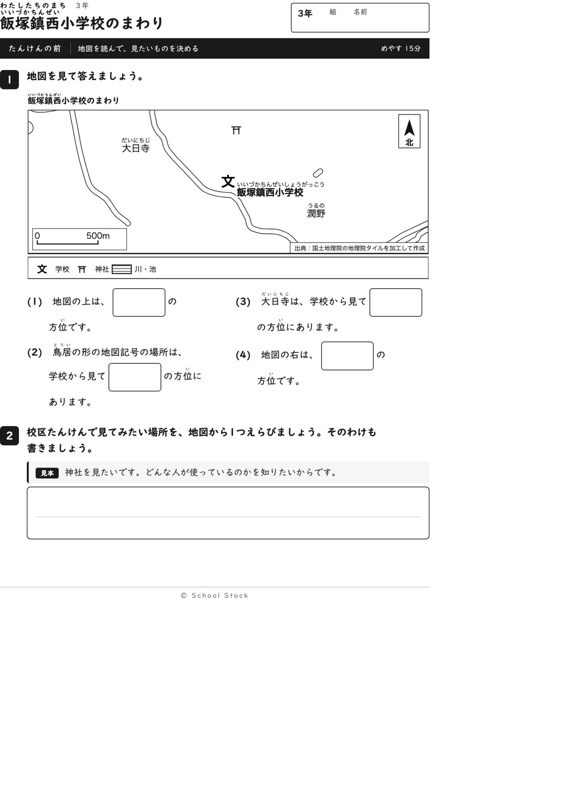
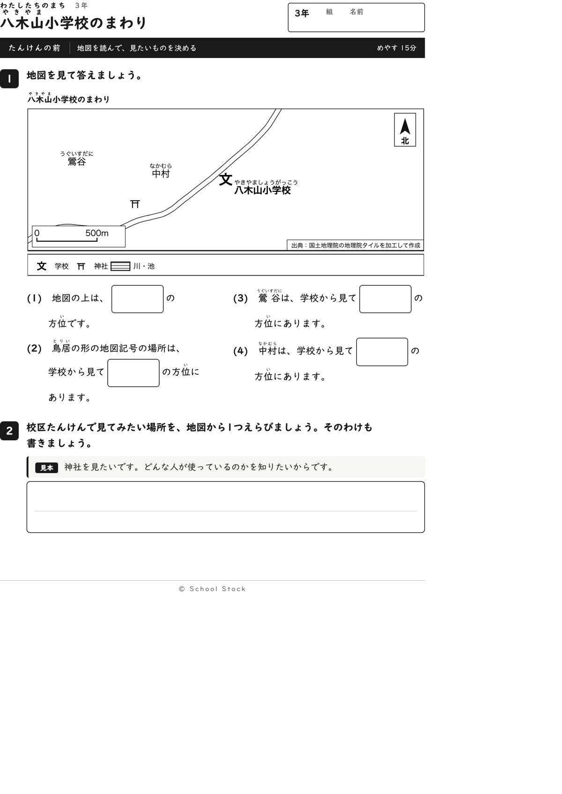
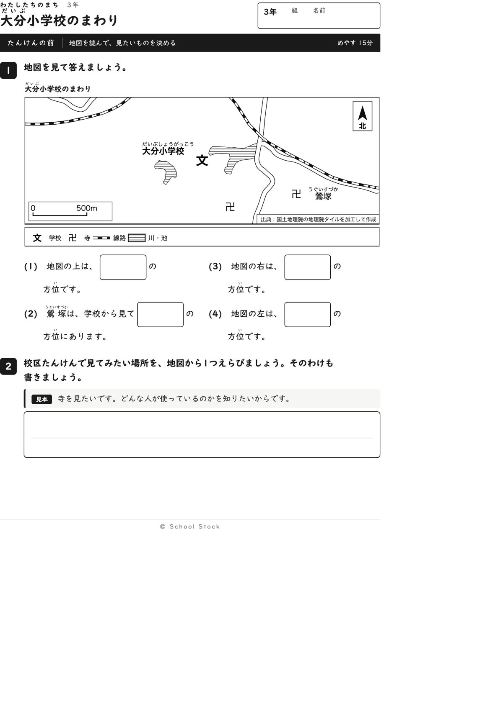
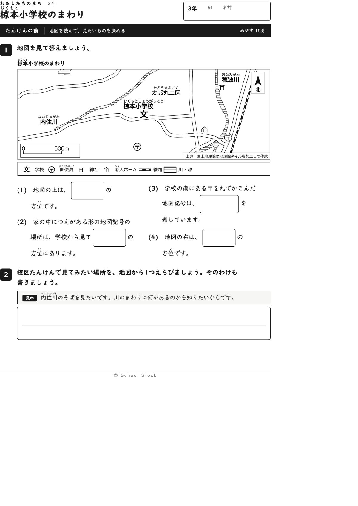

校区の一覧
1校区に5まい（たんけんの前・答え・たんけんの後・答え・先生向け資料編）。全校区共通の「きそ」は PDF・答え。

菰田小学校OK
型見本どおり。問いと答えが地図から決まります

鯰田小学校OK
前の指摘は直り、問いは地図で決まります

立岩小学校OK
4問とも自分で方位を考えて答えられる紙です

飯塚東小学校OK
問いは3年の言葉で一つに決まり、そのまま使えます

飯塚小学校OK
縮尺の重なりが直り、問いも答えも一つに決まります

片島小学校OK
方位の答えが他の問いに出なくなり、そのまま使えます

伊岐須小学校OK
2回目まで直った。問いは3年に合い、事実も合う

幸袋小学校OK
2回目まで直った。答えは地図から一つに決まる

飯塚鎮西小学校OK
2回目まで直った。問いの形がそろい動きやすい

八木山小学校OK
縮尺が読める。問いも事実も合っています

頴田小学校OK
縮尺も凡例も読める。そのまま使えます

庄内小学校OK
縮尺が読める。方位の問いも一つに決まります

内野小学校OK
方位と高さの問いが合い、資料編の数の説明も入った
上穂波小学校OK
縮尺の字は直り、資料編の数の説明も入った

大分小学校OK
問いが数に頼らなくなり、資料編の数の説明も入った

穂波東小学校OK
川と寺と神社で方位を言える、素直な1枚です

若菜小学校OK
川がなく、寺と神社と地名で方位を読む1枚です

椋本小学校OK
二つの川と老人ホームがある、方位を使う1枚です

高田小学校OK
川がなく、方位だけで読み取れる、すっきりした1枚です